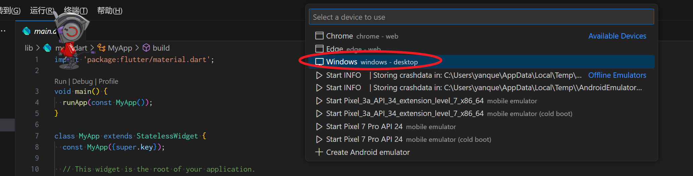

Flutter
修改于: 2024-03-30Flutter 框架
- Flutter 是一个开源的 UI 工具包，由 Google 开发，用于创建跨平台的原生应用程序。它使用 Dart 语言作为开发语言。
- Flutter 提供了一套丰富的基础组件和强大的 UI 创建能力，允许开发者以一种声明式的方式构建应用程序的用户界面。
- 通过 Flutter，开发者可以编写一次代码，然后编译到本地代码，运行在 iOS、Android、web 以及桌面等多个平台上。
安装
MacOS
在 MacOS 下, 安装 Flutter 后, 可以从输出看到, dart 已经默认被捆绑安装
brew install --cask flutter
# 下面是输出
Running `brew update --auto-update`...
==> Auto-updated Homebrew!
Updated 2 taps (homebrew/core and homebrew/cask).
==> New Formulae
c-blosc2 dissent ingress2gateway jnv protoc-gen-js ratchet rtabmap
==> New Casks
galaxybudsclient godspeed ireal-pro irpf2024 juxtacode lookaway loungy xcodepilot
You have 91 outdated formulae and 1 outdated cask installed.
==> Downloading https://raw.githubusercontent.com/Homebrew/homebrew-cask/2e01faa0b7127d4da8febacd0448062c147386af/Casks/f/flutter.rb
###################################################################################################################################################################### 100.0%
==> Downloading https://storage.googleapis.com/flutter_infra_release/releases/stable/macos/flutter_macos_3.19.5-stable.zip
###################################################################################################################################################################### 100.0%
==> Installing Cask flutter
==> Linking Binary 'dart' to '/usr/local/bin/dart'
==> Linking Binary 'flutter' to '/usr/local/bin/flutter'
🍺 flutter was successfully installed!
最后几行输出已说明
补充, 当你从 Flutter 官网下载并安装 Flutter SDK 后，你将获得以下内容：
- Dart 运行时：这是执行 Dart 代码所需的环境。
- Flutter 框架：包含了构建用户界面所需的所有核心库和组件。
- 命令行工具：如 flutter 命令行接口，它提供了创建项目、构建和运行应用程序等功能。
- 编辑器和 IDE 支持：Flutter 插件和支持，以便在流行的代码编辑器和集成开发环境中使用。
因此，如果你的目的是开发 Flutter 应用程序，你不需要单独安装 Dart。 只需按照 Flutter 官方安装指南进行操作，即可同时获得 Dart 语言环境和 Flutter 框架。
注解
此处的介绍仅自己摸索, 因为刚开始, 有些可能不完善. 官方的教程说明是自己手动下载安装, 详见: Start building Flutter native desktop apps on macOS
国内可以看这个官方推荐的中文教程(属于社区文档): 在中国网络环境下使用Flutter
Windows
直接把仓库clone下来了
git clone --recursive https://github.com/flutter/flutter.git
cd flutter && git checkout 3.19.5 # 切换到最新版
vscode里面用的时候直接手动指定一下sdk包为clone的位置.
注解
拉下来的默认是主分支的, 可以手动切换到tag
记得可以直接把clone位置下的 bin 目录加到 PATH 环境变量.
因为是国内使用, 还需要给 flutter 配置使用时候的镜像源. 可以在每次用的时候再手动设置以下镜像环境变量:
PUB_HOSTED_URL="https://pub.flutter-io.cn" FLUTTER_STORAGE_BASE_URL="https://storage.flutter-io.cn"
也可以手动去系统环境变量加入
若需要完整的按照国内的教程使用, 详情参考 在中国网络环境下使用Flutter .
Linux
设置镜像地址:
export PUB_HOSTED_URL="https://pub.flutter-io.cn"
export FLUTTER_STORAGE_BASE_URL="https://storage.flutter-io.cn"
其他与上面基本一致
这里简单给个使用curl直接下载指令
# 加上 tar 指令, 会将包直接解压文件夹
curl https://storage.flutter-io.cn/flutter_infra_release/releases/stable/linux/flutter_linux_3.19.5-stable.tar.xz | tar -xJ
然后记得设置下当前目录的环境变量或者软链接一下, 我是软链接的
# 软链接
ln -s flutter/bin/flutter /usr/local/bin/flutter
ln -s flutter/bin/dart /usr/local/bin/dart
记得测试一下, 看看还有哪些依赖需要安装当前却没有的, 比如可能会没有 cmake
flutter doctor
比如我是新装的虚拟机, 需要额外的模块
sudo apt install clang cmake pkg-config ninja-build libgtk-3-dev
创建项目
参考: 3. 创建项目
此处仅介绍在 Vscode 中创建项目. Ctrl + Shift + P 打开命令面板, 输入 flutter. 选择 Flutter: New Project
注解
需要先安装 Flutter 插件
然后选择项目名称, 项目位置, 项目模板
创建好后, 你会发现下面有各个平台的文件夹, 不用去管这些平台文件夹. Flutter 开发, 是基于 Dart 语言的, 相关源码只用在 lib 文件夹下, main.dart 是入口文件. 默认输出到 build 文件夹下.
注解
用 lib 作为输出目录, 有点奇葩, 一般貌似默认都叫 src...
当第一次打开 lib/main.dart 时候, 可能会有报错:
"Target of URI doesn't exist: 'package:flutter/material.dart'.
说明是多半没把资源拉下来, 手动执行下
# flutter pub get # 好像如果拉的别人的项目用这个?
flutter packages get
配置文件介绍
- pubspec.yaml
- pubspec.yaml 是主配置文件. 在 dependencies 中添加依赖, dev_dependencies 中添加开发依赖.
- analysis_options.yaml
- 此文件决定了 Flutter 在分析代码时的严格程度(感觉就像tsconfig).
启动
报错1: 版本不匹配
如果遇到报错:
lib/main.dart:1:1: Error: The specified language version is too high. The highest supported language version is 3.3.
可能是创建好后中途切过版本, 我是重新创建一个项目解决的.
或者
flutter clean
后重新加载(没试过)
报错2: "dart:ui" 不可用
错误信息:
flutter/packages/flutter/lib/src/material/animated_icons.dart:9:8: Error: Dart library 'dart:ui' is not available on this platform.
- 原因:
- 直接将 lib/main.dart 当做普通的文件执行, 而不是作为 Flutter 项目启动.
- 解决
不要直接点 Vscode 右上角的三角形 Run 按钮, 而是去到 Debug -> Start Debugging 选项或直接按 F5
第一次点后会让你选择平台, 因为我用的 Windows 就选这个了

控件介绍
对于 Flutter 万物皆控件.
- Container: 容器, 类似div吧
- Row: 行
- Column: 列
- Text: 文本
- Image: 图片
- Icon: 图标
- ListView: 列表
- GridView: 网格
- Card: 卡片
- Button: 按钮
- TextField: 文本框
- Switch: 开关
- Checkbox: 复选框
- Radio: 单选框
- Slider: 滑动条
- ProgressIndicator: 进度条
- AppBar: 顶部栏
- Expanded: 扩展, 每个 Expanded 代表一个区块，可以包含任何你想要的 Widget
Expanded
布局组件. 使得布局能够自适应不同的屏幕尺寸和方向变化，同时简化了布局代码的编写
- 均匀分配空间：
- Expanded 会自动分配父容器中未使用的空间给它的子组件。这意味着如果有多个 Expanded 组件，它们会平分额外的空间。
- 响应式布局：
- 当父容器的大小变化时（例如，设备方向改变或键盘弹出）， Expanded 会响应这些变化并重新分配子组件的大小，保持布局的一致性和适应性。
- 简化布局代码：
- 使用 Expanded 可以减少手动计算和分配空间的需要，简化布局代码，使代码更加清晰和易于维护。
- 保持宽高比：
- 当 Expanded 用于 Row 或 Column 时，它可以保持子组件的宽高比，避免组件被拉伸或压缩。
Flexible
布局组件. 使得布局能够自适应不同的屏幕尺寸和方向变化，同时简化了布局代码的编写
- 灵活的空间分配：
- Flexible 提供了比 Expanded 更灵活的空间分配方式。通过 flex 属性，可以指定子组件占据的额外空间的比例。
- 优先级控制：
- Flexible 允许您通过 fit 属性（FlexFit.tight 或 FlexFit.loose）来控制子组件填充空间的优先级，从而实现更精细的布局控制。
- 嵌套使用：
- Flexible 可以嵌套使用，创建复杂的布局结构，同时保持子组件之间的空间分配比例。
- 与 Expanded 配合使用：
- Flexible 可以与 Expanded 配合使用，创建复杂的布局，其中一些子组件均匀分配空间，而其他子组件根据比例分配空间。
控件风格
Material 与 非 Material(Cupertino)
以下源于AI
Material Design
设计理念：Material Design 是 Google 设计语言的一部分，它模仿了现实世界中的材料和光影效果，强调平面化、简洁和动态反馈。 视觉元素：Material Design 使用扁平化的设计元素，如按钮、卡片、浮动操作按钮（FloatingActionButton）等，这些元素通常具有阴影效果，以模拟纸张的厚度和层次。 交互反馈：Material Design 强调直观的交互反馈，如按钮按下时的阴影变化、滑动操作时的动态效果等。 导航：Material Design 提供了多种导航模式，如底部导航栏（BottomNavigationBar）、标签导航（TabBar）和抽屉导航（Drawer）等。 适用场景：Material Design 适用于需要现代化、简洁风格的应用，它在 Android 和 Web 应用中非常流行。
Cupertino（非 Material）
设计理念：Cupertino 设计风格是 Apple 的设计语言，它模仿了 iOS 的用户界面元素和交互模式，强调清晰、直观和一致性。 视觉元素：Cupertino 风格使用更加立体的设计元素，如带有圆角的按钮、列表视图（ListView）和导航栏（NavigationBar）等，这些元素通常没有阴影效果，以模拟玻璃的质感。 交互反馈：Cupertino 风格也提供了丰富的交互反馈，如按钮按下时的背景色变化、滑动列表时的弹性效果等。 导航：Cupertino 风格提供了类似 iOS 的导航模式，如分段控件（SegmentedControl）、弹出菜单（ActionSheet）和模态弹出（Modal）等。 适用场景：Cupertino 风格适用于需要符合 iOS 设计规范的应用，它在 iOS 和 macOS 应用中非常受欢迎。
简单理解,
- Material 是偏Android的UI风格
- Cupertino 是偏iOS的UI风格
控件状态
默认提供了 有状态控件 StatefulWidget 和 无状态控件 StatelessWidget
简单来说, 有状态控件 StatefulWidget 可以根据控件自动刷新, setState 方法可以触发控件刷新
增加包依赖
类似node 的 package.json , flutter 是通过 pubspec.yaml 来管理依赖包.
比如加入 路径处理模块的依赖.
dependencies:
path_provider: ^2.0.0
然后运行 flutter pub get 来安装依赖
flutter指令选项参考
pub
- get
安装依赖, 类似node的 npm install
flutter pub get
- add
命令行添加依赖, 类似node的 npm install xxx, 这样就不用手动改 pubspec.yaml 文件了.
比如增加 add path_provider 和 file_selector 两个包.
flutter pub add path_provider file_selector
packages
早期版本就有的指令
- get
与 pub get 类似, 都可以获取依赖
flutter packages get
功能基本相同, 早期版本只有 packages get. 新版本中, 貌似即使使用的是 flutter packages get, 也会转换为 flutter pub get
一些模块/插件参考
- path_provider
- 文件读取功能
- file_selector
- 打开文件/目录选择器来选择文件/目录
可能遇到的问题
Error: Not a constant expression
我这里的原因是使用了 const, 但是上面传递的值不是 const 类型, 删掉 const 即可.
使用状态组件时, 状态类获取父类信息
使用 widget:
widget 是一个特殊的变量，它是当前 State 对象所关联的 StatefulWidget 的实例。 通过 widget ，可以访问 StatefulWidget 中定义的数据和方法。
另外还有一个 context 表示当前 BuildContext ，它包含了构建过程中的上下文信息，可以用来访问祖先小部件的属性和方法。